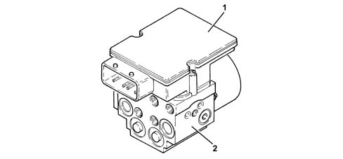
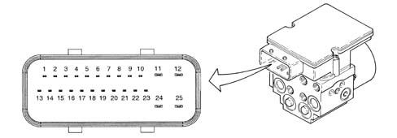
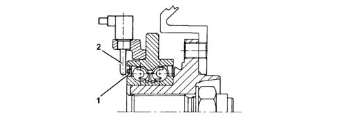
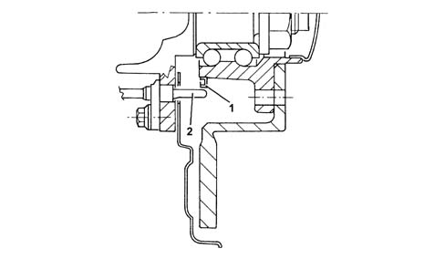
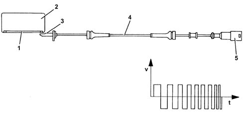

3340A abs check/adjustment devices
- Path
- Descriptions > 33 BRAKING SYSTEM > 3340 A(B.S. ANTI-LOCK BRAKING SYSTEM .) > 3340A abs check/adjustment devices
- Kind
- system description
- Applies to
- all engines; all production periods
- Interactive page
- https://sloeber94.github.io/elrnDB-lYpsln/en/#/2427424
Applies to: all engines; all production periods
COMPOSITION
This consists of an electronic cotnrol unit (1) and an electro-hydraulic control unit (2).

Applies to: all engines; all production periods
Operation
The electronic control unit performs the following functions:
- acquiring the data coming from the 'active' wheel rpm sensors;
- memorizing the control parameters defined during car preparation;
- memorizing control software;
- processing dowloaded data;
- controlling the braking process;
- detecting failures at the braking system components;
- memorizing fault codes and activating the A.B.S. and EBD warning lights;
- sends and receives data via the C-CAN
- transmitting and receiving data via the tester connection.
Applies to: all engines; all production periods
Function
Responsible for modulating the pressure of the fluid at the brake calipers via two solenoid valves with the following stages:
- brake fluid pressure increase;
- brake fluid pressure maintenance;
- brake fluid pressure discharge.
Applies to: all engines; all production periods
Structure
The electro-hydraulic control unit consists of:
- eight two-way solenoid valves;
- a dual circuit electric recovery pump;
- two low pressure accumulators;
- two high pressure accumulators.
PIN OUT

1 - c-can-LOW 2 - c-can-HIGH 3 - ASR button 4 - ASR led on 5 - N.C. 6 - Diagnostic line K 7 - Right front sensor positive 8 - Right front sensor negative 9 - Right rear sensor positive 10 - Right rear sensor negative 11 - Signal earth 12 - Solenoid + 30 power supply 13 - N.C. 14 - N.C. 15 - N.C. 16 - Vehicle speed signal to body computer (NBC) 17 - Brake pedal sensor 18 - N.C. 19 - Left front sensor positive 20 - Left front sensor negative 21 - Left rear sensor positive 22 - Left rear sensor negative 23 - VIGN (+15 key-ON/OFF) 24 - pump motor negative 25 - pump motor negative
Applies to: all engines; all production periods
System specifications
The adoption of active sensors offers the following advantages:
- Less sensitivity to the distance between the sensor and the magnetic ring (gap)
- Ability to measure wheel rpm up to ≈ zero
- Reduced sensitivity to electromagnetic disturbance;
- Reduce weight and bulk;
- Simplified transmission joints to eliminate phonic wheels
Applies to: all engines; all production periods
Structure
The active sensors consist of two basic parts:
- a magnetic multi-polar codifier (1) integrated in the instrumented wheel hub bearing
- a 'magnetic-resistive' receiver (2) opposite the codifier.
FRONT SENSORS

Applies to: all engines; all production periods
Structure
FRONT SENSORS

Applies to: all engines; all production periods
Introduction
The operation of the sensor is based on the variation in the internal electrical resistance depending on the intensity and the direction of the lines of force of an external magnetic field (multipolar magnetic codifier) producing a variable square wave signal whose frequency depends on the rotation speed of the wheel, but whose range is constant.
The active sensor is thus a proximity sensor with its own electronic system. It is connected to the ABS control unit by means of an electrical supply cable and sends vehicle speed information to the control unit.
The phonic ring is a multipolar ring, an elastomer with a certain quantity of magnetic particles which are aligned by means of a special magnetization technique to produce different magnets with alternating north and south polarity around the circumference of the ring.

1 - Magnetized seal 2 - Bearing 3 - Sensor head 4 - Sensor wiring 5 - Sealed connector